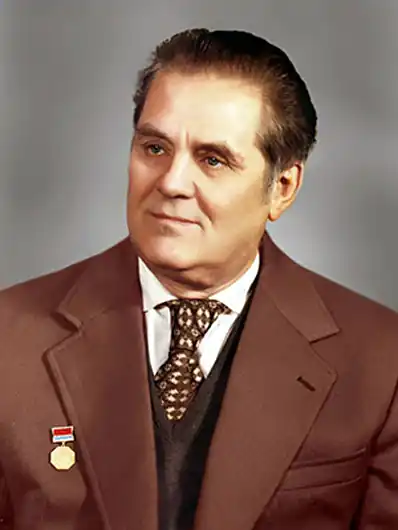
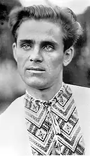

Дмитроо Омелянович Луценко (15 жовтня 1921,с. Березова Рудка Пирятинського району на Полтавщині — 16 січня 1989, Київ) — Заслужений діяч мистецтв України, лауреат Національної премії імені Тараса Шевченка, Почесний громадянин міста Києва.
З раннього дитинства довкола Дмитрика лунала рідна пісня. Мав чудовий голос батько хлопця. При добрій нагоді у привітній оселі Луценків збиралися рідні, друзі, сусіди – й пісня була головною на таких гостинах.
Потім настав Голодомор. Помер батько. Дивом виживши, Дмитро вирушив на Донбас. Шахтарював, навчався у гірничо-промисловому технікумі. 1938р. Дмитро Луценко вступив до Київського гідромеліоративного інституту. За два роки мобілізований до армії, служив на кордоні з Афганістаном. Під час війни був автоматником розвідувальної роти. В одному з боїв у Східній Прусії був тяжко поранений і контужений, дістав інвалідність. Після шпиталю повернувся до навчання в інституті. У повоєнні роки працював у газетах "Сільські вісті", "Молодь України", в українській редакції Всесоюзного радіо. Перша збірка віршів Д.Луценка — "Дарую людям пісню" — вийшла друком 1962р. Книгу щиро вітав Володимир Сосюра. З нею прийняли до Спілки письменників. На одній із зустрічей молодих журналістів з читачами Дмитро Омелянович познайомився з Тамарою Іванівною, кореспонденткою однієї з газет. Лише за якихось п'ять днів пара взяла шлюб. Потім сталося горе: померла у неповні 17 років таткова улюблениця, донечка Лариса. Тоді Дмитра Омеляновича і спіткав перший інфаркт. Врятувала і підняла на ноги Пісня… На слова Д.Луценка писали пісні П.Майборода, Ю.Білаш, В.Верменич, І.Шамо та інші відомі композитори. У плідній співпраці народилося понад 300 пісень. Справжні шедеври — "Осіннє золото", "Мамина вишня", "Україно, любов моя" — та багато інших. Пісні на слова Дмитра Луценка виконували Д.Гнатюк і Діана Петриненко, А.Мокренко і Ніна Матвієнко, хорова капела "Думка" і народний хор ім.Г.Верьовки… У творчому доробку поета – понад десять поетичних збірок. Його твори перекладені багатьма мовами світу. 1976р. Д.Луценко став лауреатом Шевченківської премії – разом з І.Шамо, за пісню "Києве мій". Помер Д.Луценко 16 січня 1989р. – від восьмого інфаркту… Починаючи з 1990-го, в рідній Луценковій Березовій Рудці, куди він часто приїздив, відбуваються пісенні свята "Осіннє золото", під час яких виконуються пісні на його слова. 2001р. була заснована премія імені Дмитра Луценка, яку вручають найкращим співакам, композиторам, поетам. Ім'ям Дмитра Луценка названа одна з київських вулиць.